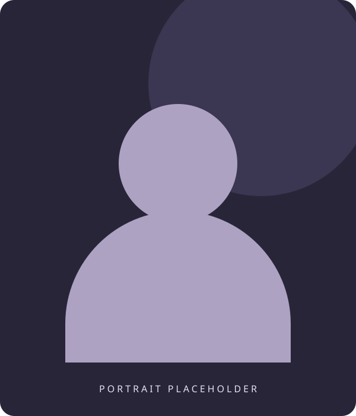
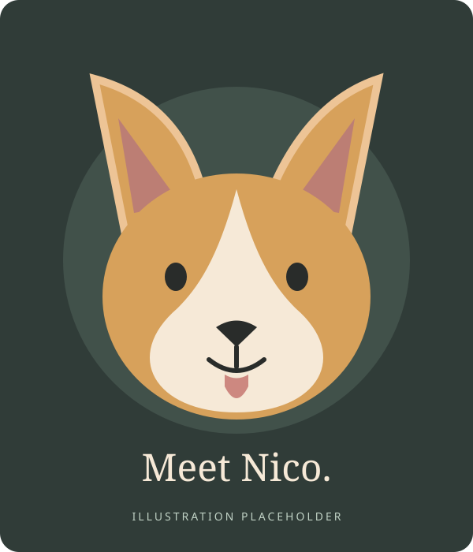
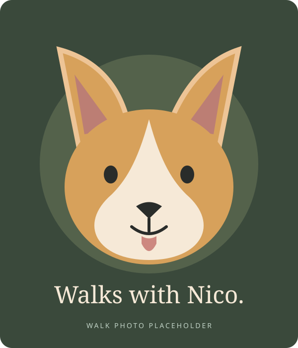
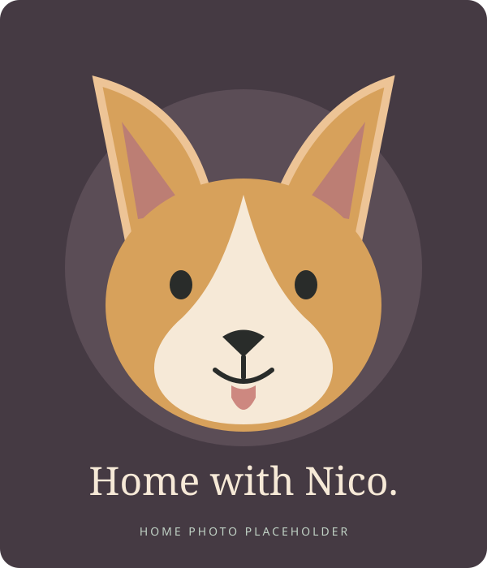

HTML · CSS · JavaScript
devdash
A single-file dashboard bringing together coding activity, GitHub pull requests, CI runs, API spend, and system load.
Professional overview
Back-End Engineer · Vice President at BNY
I build Java and Spring services for banking systems, combining hands-on engineering with a background in finance and eleven years of bank IT project delivery.
My independent work explores developer tools, analytics, and local AI environments. This profile includes draft enterprise and freelance case studies that I’m preparing to expand.

Origins · Georgia
I was born in Gali, Georgia, in 1983. My path would later take me through Ozurgeti and Tbilisi to New York, and from finance to banking technology and software engineering.
Chapter 02 / Ozurgeti
The war in Abkhazia forced me to leave Gali and move to Ozurgeti. This part of my childhood remains an important part of my story, long before my career in technology began.
Chapter 03 / Tbilisi
After graduating from school in 2000, I moved to Tbilisi to begin university. It was the start of a new chapter in my education and life in Georgia.
Chapter 04 / Tbilisi
I studied finance at Tbilisi State Institute of Business from 2000 to 2005. That background gave me a foundation for understanding the banking businesses I would later support through technology.
Chapter 05 / Tbilisi
I joined Agroinvestbank as a Junior Project Manager in 2007. This was the beginning of my work delivering IT projects within Georgian banking institutions.
Chapter 06 / Tbilisi
At Halyk Bank Georgia, I worked as an IT Project Manager from 2008 to 2010. I continued developing my experience in technology delivery within a banking environment.
Chapter 07 / Tbilisi
From 2010 to 2014, I managed IT projects at Kor Standard Bank. This role formed a substantial part of my eleven-year career in Georgian bank technology delivery.
Chapter 08 / Tbilisi
I joined Capital Bank as an IT Project Manager in 2014, continuing my work across Georgian banking institutions before moving to VTB Georgia the following year.
Chapter 09 / Tbilisi
At VTB Georgia, I worked as an IT Project Manager from 2015 to 2018. Across five banks, my career had covered eleven years of technology delivery. My next step would be hands-on software engineering.
Chapter 10 / New York
From December 2018 to May 2022, I worked independently as a Java Developer under ablotia in Greater New York. I brought my banking and project delivery background into a new engineering role.
Chapter 11 / New York
At Wells Fargo through Kforce, I developed services for account origination: booking endpoints, process-state search, credit-card application validation, and Fiserv integrations using REST and OpenFeign.
Chapter 12 / Brooklyn
Since September 2023, I’ve worked at BNY as a Vice President, Back-End Engineer. My work spans Java and Spring services and Angular applications within regulated banking systems.
To personalize: describe a service you owned, an integration you delivered, your role in code reviews or technical decisions, and a result you can substantiate. Add only responsibilities that reflect your actual work at BNY.
Selected independent work
My independent work explores developer tools, data analysis, publishing workflows, and local AI.
HTML · CSS · JavaScript
A single-file dashboard bringing together coding activity, GitHub pull requests, CI runs, API spend, and system load.
RSS · Google Cloud Storage
A satirical AI-industry blog with automated ingestion, curation, and generation, followed by a review step before publication.
Chart.js · Excel
An interactive report built from a thousand-row retail dataset, alongside a six-sheet workbook with live formulas.
Tauri · Flutter exploration
An exploration of desktop application approaches, followed by a working dark editor prototype with multiple tabs.
Ollama · Open WebUI · LiteLLM
A self-hosted setup that connects hosted and local models through a shared proxy on one workstation.
Browser extension · Google Forms
A published extension with a lightweight feedback and bug-reporting workflow using Google Forms.
Project templates · Draft content
Illustrative project examples — these are not claims of completed client work. Replace the scope, role, and evidence with your actual experience before publishing.
Enterprise · Draft example
Replace fragmented application steps with a single onboarding workflow.
Java · Spring Boot · PostgreSQL
Enterprise · Draft example
Coordinate payment requests across services without losing transaction state.
Java · Kafka · Spring Boot
Enterprise · Draft example
Provide a consistent API across external card-provider integrations.
Spring MVC · OpenFeign · JUnit 5
Enterprise · Draft example
Identify differences between internal records and external settlement files.
Java · SQL · Batch processing
Project templates · Draft content
Illustrative project examples — these are not claims of completed client work. Replace the scope, role, and evidence with your actual experience before publishing.
Enterprise · Draft example
Deliver consistent messages as business processes change state.
Kafka · Spring Boot · Templates
Enterprise · Draft example
Help support teams understand service health and investigate process failures.
Angular · REST · Chart.js
Enterprise / AI · Draft example
Make internal technical documentation easier to find and understand.
Python · Retrieval · LLM API
Enterprise / AI · Draft example
Turn incoming business documents into reviewable structured records.
Python · OCR · Structured output
Project templates · Draft content
Illustrative project examples — these are not claims of completed client work. Replace the scope, role, and evidence with your actual experience before publishing.
Freelance · Draft example
Help a small business manage availability and customer bookings.
Spring Boot · Angular · PostgreSQL
Freelance · Draft example
Bring sales, fulfilment, and inventory reporting into one view.
Chart.js · SQL · Excel
Freelance / AI · Draft example
Answer routine product questions while providing a clear route to human support.
LLM API · Retrieval · REST
Freelance / AI · Draft example
Give a development team a consistent way to experiment with local and hosted models.
Ollama · Open WebUI · LiteLLM
Tools and domain experience
A combination of backend engineering, frontend development, and experience delivering technology within banks.
Backend & integration
Spring Boot, Spring MVC, REST APIs, Apache Kafka, WebSphere MQ, and OpenFeign.
Frontend & data
Angular 17, Angular Material, Chart.js, and Excel modelling.
Testing & systems
JUnit 5, Mockito, AWS, and Linux. CachyOS on Arch for my workstation.
AI-assisted development
Claude Code, Gemini CLI, Ollama, Open WebUI, and LiteLLM.
Banking context: retail, commercial, and investment banking; card issuing, account origination, and payment messaging.
Development practice & portfolio direction
My current tooling includes Claude Code, Gemini CLI, Ollama, Open WebUI, and LiteLLM. The next portfolio examples explore how these tools can support useful applications and repeatable development workflows.
Existing profile · Local tooling
A local setup using Ollama, Open WebUI, and LiteLLM to work with local and hosted models through a shared interface.
Draft practice statement
Suggested scope: use coding assistants for implementation drafts, tests, and documentation, with human review and automated checks before changes ship.
Draft capability to demonstrate
Suggested evidence: a retrieval demo with citations, structured outputs, permission boundaries, and a clear fallback when context is missing.
Draft evaluation plan
Suggested evidence: task-based quality checks, latency and cost comparisons, regression cases, and a record of model limitations.
The proposed practices and capabilities above are editable drafts. They do not imply production AI delivery at BNY or another employer.
Outside work / Family
Away from work, there’s Nico. I adopted this corgi and welcomed a new member into the family. He gets his own chapter here, because a life story should have room for more than job titles.

Outside the job titles
A place for real portraits, everyday moments, and Nico. These illustrations reserve space for personal photos to add later.


Summary & contact
I bring experience across banking operations, IT project delivery, and software engineering. Based in Brooklyn, I’m interested in consulting and practical engineering problems. Reach out to discuss a project, compare ideas, or say hello.